Interpretacja geometryczna liczby zespolonej
W rozdziale Definicja powiedzieliśmy, że każdej liczbie zespolonej
\(z=a+bi\) odpowiada uporządkowana para liczb \((a,b)\).
Dla liczby \(z\) którą zaznaczyliśmy w powyższym układzie współrzędnych mamy: \[\operatorname{arg} z = \varphi \] Korzystając wprost z definicji funkcji trygonometrycznych dla trójkąta prostokątnego narysowanego w powyższym układzie współrzędnych, otrzymujemy: 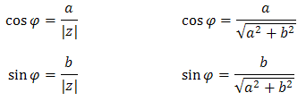 Wzory po prawej stronie otrzymaliśmy z tych po lewej, po prostu podstawiając do nich wzór na moduł. Dla wygody dalej będziemy posługiwali się głównie tymi wzorami po lewej (bo są krótsze w zapisie). Bezpośrednio z nich otrzymujemy, że: 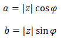
Przykłady zapisania liczby
zespolonej na dwa różne sposoby.
| Liczba zespolona zapisana w postaci ogólnej | Liczba zespolona zapisana jako punkt |
| \(a + bi\) | \((a, b)\) |
| \(2 + 5i\) | \((2, 5)\) |
| \(5 + 2i\) | \((5, 2)\) |
| \(7 - i\) | \((7, -1)\) |
| \(-8 - 2i\) | \((-8, -2)\) |
| \(i\) | \((0, 1)\) |
| \(1\) | \((1, 0)\) |
| \(0\) | \((0, 0)\) |
Możemy interpretować liczby zespolone jako punkty na płaszczyźnie.
Na osi \(x\)-ów będziemy zaznaczać część rzeczywistą liczby zespolonej, a na osi \(y\)-ów część urojoną.
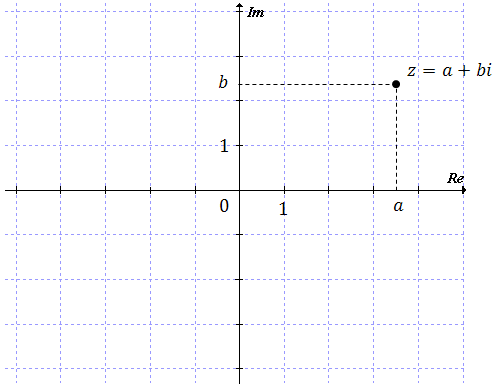 Oto przykłady kilku konkretnych liczb zespolonych zaznaczonych
w układzie współrzędnych: 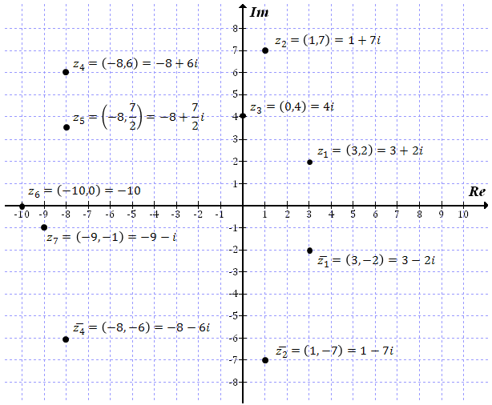
Na osi \(x\)-ów będziemy zaznaczać część rzeczywistą liczby zespolonej, a na osi \(y\)-ów część urojoną.
W powyższym układzie współrzędnych zaznaczyłem również liczby sprzężone do \(z_1\),
\(z_2\) oraz \(z_4\). Zauważ, że są one po prostu odbiciami symetrycznymi względem osi \(x\)-ów.
Zaznaczymy teraz jeden ogólny punkt na płaszczyźnie zespolonej i określimy dla
niego kilka własności.
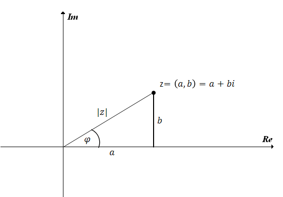
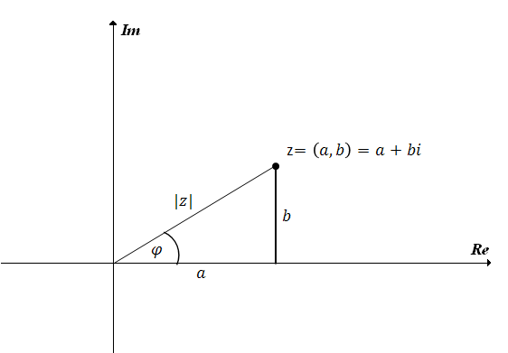
Odległość liczby zespolonej \(z=a+bi\) od początku układu współrzędnych,
z twierdzenia Pitagorasa, wyraża się wzorem: 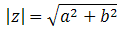 Czyli jest to po prostu moduł tej liczby
\(z\).
Kąt między osią Re, a półprostą wychodzącą z początku układu współrzędnych i
przechodzącą przez punkt \(z\) oznaczamy najczęściej literką \(\varphi\) (czytamy: fi).
Miarę zaznaczonego kąta \(\varphi\) będziemy zazwyczaj wyrażać w radianach (a nie
w stopniach). Możemy zatem napisać, że \(\varphi\in \mathbb{R} \).
Liczbę \(\varphi\)
nazywamy argumentem liczby \(z\) i oznaczamy \(\operatorname{arg} z\).Dla liczby \(z\) którą zaznaczyliśmy w powyższym układzie współrzędnych mamy: \[\operatorname{arg} z = \varphi \] Korzystając wprost z definicji funkcji trygonometrycznych dla trójkąta prostokątnego narysowanego w powyższym układzie współrzędnych, otrzymujemy: 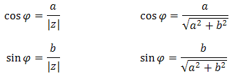 Wzory po prawej stronie otrzymaliśmy z tych po lewej, po prostu podstawiając do nich wzór na moduł. Dla wygody dalej będziemy posługiwali się głównie tymi wzorami po lewej (bo są krótsze w zapisie). Bezpośrednio z nich otrzymujemy, że: 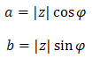
Możemy zatem zapisać, że: 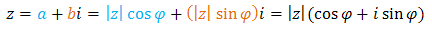
Wzór który otrzymaliśmy: 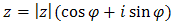
to postać trygonometryczna liczby zespolonej \(z=a+bi\).
Wiemy już, że możemy przedstawić jedną liczbę zespoloną na trzy różne sposoby:
- w postaci ogólnej \(z=a+bi\),
- jako punkt \((a,b)\) na płaszczyźnie,
- w postaci trygonometrycznej \(z=|z|(\cos \varphi + i\sin \varphi)\).
Każda z nich ma swoje plusy i minusy. Zaletą postaci trygonometrycznej jest to, że
umożliwia w łatwy sposób podnoszenie liczb zespolonych do dużych potęg. Więcej na ten temat powiemy
w rozdziale Wzór de Moivre'a -
potęgowanie liczb zespolonych.
Dla liczby zespolonej\(z=\sqrt{3}+i\) wyznacz moduł, argument oraz postać
trygonometryczną.
Zacznijmy od zaznaczenia liczby \(z\) w układzie współrzędnych:
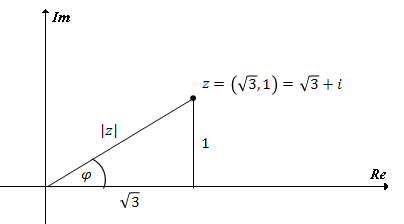 Obliczamy moduł z twierdzenia
Pitagorasa:  Teraz obliczamy argument, np.
korzystając z definicji sinusa: 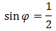 Zatem: 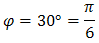 Możemy nawet zapisać, że: 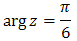 Teraz zapisujemy postać
trygonometryczną, podstawiając do wzoru wyliczone przed chwilą wartości:
Teraz obliczamy argument, np.
korzystając z definicji sinusa: 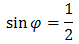 Zatem: 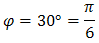 Możemy nawet zapisać, że: 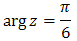 Teraz zapisujemy postać
trygonometryczną, podstawiając do wzoru wyliczone przed chwilą wartości:  Możemy jeszcze sprawdzić, że obliczając
wartości liczbowe funkcji trygonometrycznych w powyższym wzorze, otrzymamy wyjściową postać
ogólną: 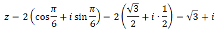
Możemy jeszcze sprawdzić, że obliczając
wartości liczbowe funkcji trygonometrycznych w powyższym wzorze, otrzymamy wyjściową postać
ogólną: 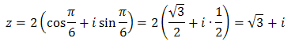
Teraz obliczamy argument, np.
korzystając z definicji sinusa: 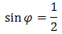 Zatem: 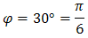 Możemy nawet zapisać, że: 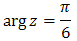 Teraz zapisujemy postać
trygonometryczną, podstawiając do wzoru wyliczone przed chwilą wartości: Możemy jeszcze sprawdzić, że obliczając
wartości liczbowe funkcji trygonometrycznych w powyższym wzorze, otrzymamy wyjściową postać
ogólną: 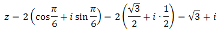